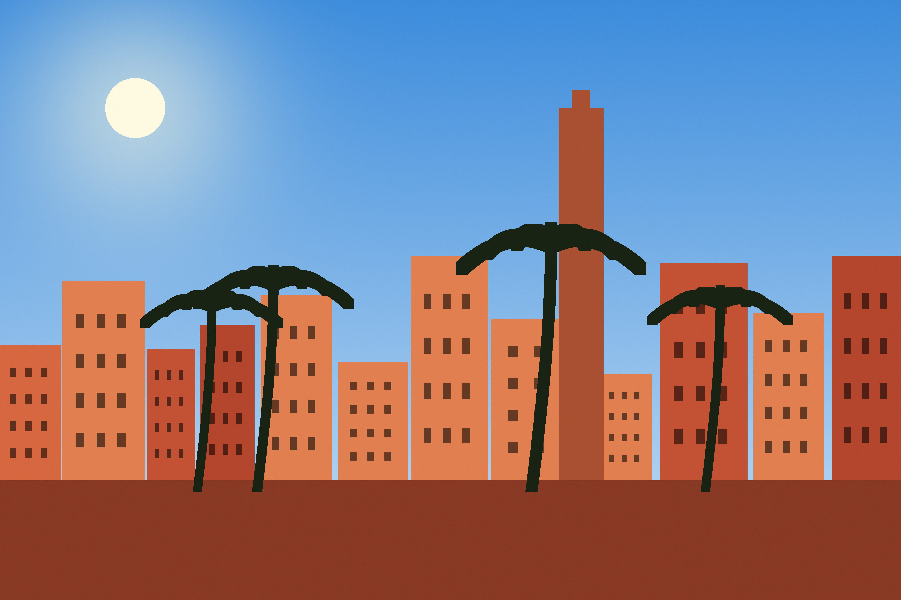
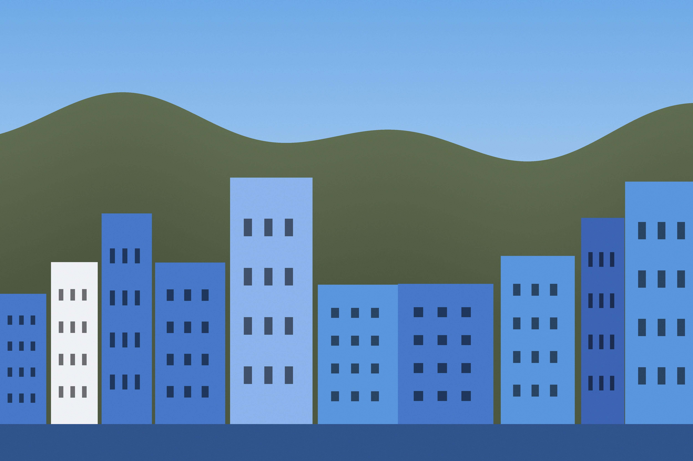
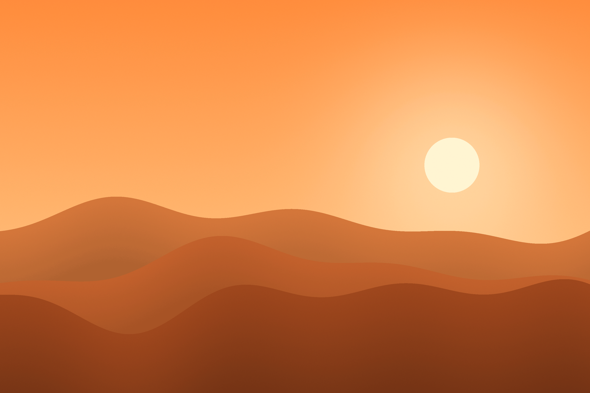

Vous cherchez un voyage Maroc pas cher ? Atlas Evasion est l'agence voyage Maroc pas cher qui organise votre voyage Maroc pas cher. Notre voyage Marrakech pas cher et notre circuit désert Maroc pas cher sont les meilleurs voyage Maroc pas cher du marché. Avec Atlas Evasion, le voyage Maroc pas cher devient facile. Le Maroc est un pays magnifique qui offre une grande diversité de paysages : des montagnes de l'Atlas aux dunes du Sahara, en passant par les plages de l'Atlantique et les villes impériales.Chaque ville a son charme , son histoire et sa cuisine. Marrakech est la destination la plus demander par nos clients, elle est connu pour sa place Jemaa el-Fna, ses souks et ses jardins. Chefchaouen, la ville bleue, est situé dans les montagnes du Rif et attire de plus en plus de touristes chaque années. Le désert de Merzouga est idéal pour une nuit en bivouac sous les étoiles , une expérience que nos clients n'oublie jamais. Enfin Essaouira est parfaite pour se reposer au bord de l'océan après un circuit fatiguant. Toutes nos destinations sont accessible en minibus climatisé depuis Marrakech ou Casablanca.
Marrakech, la ville rouge

Circuit Marrakech impériale : 4 jours / 3 nuits. Prix : à partir de 3 490 DH par personne.
Visite de la place Jemaa el-Fna
Balade dans les souks
Dîner dans un riad traditionnel
Attention : places limitées pour l'été !
Chefchaouen, la perle bleue

Excursion à la journée depuis Tanger ou Fès, avec guide francophone.
Le désert de Merzouga

Nuit en bivouac, balade à dos de dromadaire et coucher de soleil sur les dunes de l'Erg Chebbi.